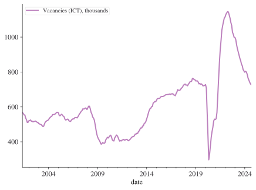
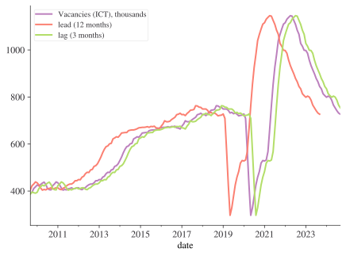

from datetime import datetime
now = datetime.now()
print(now)2026-07-25 23:46:16.154782This chapter will show you how to work with dates and times in Python. At first glance, dates and times seem simple. You use them all the time in your regular life, and they don’t seem to cause much confusion. However, the more you learn about dates and times, the more complicated they seem to get. To warm up, try these three seemingly simple questions:
I’m sure you know that not every year has 365 days, but do you know the full rule for determining if a year is a leap year?
You might have remembered that many parts of the world use daylight savings time (DST), so that some days have 23 hours, and others have 25. You might not have known that some minutes have 61 seconds because every now and then leap seconds are added because the Earth’s rotation is gradually slowing down.
Dates and times are hard because they have to reconcile two physical phenomena (the rotation of the Earth and its orbit around the sun) with a whole raft of geopolitical phenomena including months, time zones, and DST.
This chapter won’t teach you every last detail about dates and times, but it will give you a solid grounding of practical skills that will help you with common data analysis challenges. In particular, one code task related to time that we won’t cover here includes how to run scripts or functions at a given frequency, ie how to schedule jobs.
This chapter focuses on working with dates and time series using polars. We’ll also use matplotlib for visualising time series data. Make sure you have polars installed (using uv add polars in the terminal).
A point in time as represented in data science is composed of a clock time and a date. These two elements are brought together as a datetime.
The datetime object is the fundamental time object in Python. It’s useful to know about these before moving on to datetime operations using polars (which you’re far more likely to use in practice). Python’s datetime objects capture the year, month, day, hour, second, and microsecond. Let’s import the class that deals with datetimes (whose objects are of type datetime.datetime) and take a look at it.
from datetime import datetime
now = datetime.now()
print(now)2026-07-25 23:46:16.154782Most people will be more used to working with day-month-year, while some people even have month-day-year, which clearly makes no sense at all! But note datetime follows ISO 8601, the international standard for datetimes that has year-month-day-hrs:mins:seconds, with hours in the 24 hour clock format. This is the format you should use when coding too.
We can see that the variable we created has methods such as year, month, day, and so on, down to microsecond. When calling these methods on the now object we created, they will return the relevant detail.
Try calling the year, month, and day functions on an instance of datetime.now().
Note that, once created, now does not refresh itself: it’s frozen at the time that it was made.
To create a datetime using given numerical information the command is:
specific_datetime = datetime(2019, 11, 28)
print(specific_datetime)2019-11-28 00:00:00To make clearer and more readable code, you can also call this using keyword arguments: datetime(year=2019, month=11, day=28).
One of the most common transformations you’re likely to need to do when it comes to times is the one from a string, like “4 July 2002”, to a datetime. You can do this using datetime.strptime(). Here’s an example:
date_string = "16 February in 2002"
datetime.strptime(date_string, "%d %B in %Y")datetime.datetime(2002, 2, 16, 0, 0)What’s going on? The pattern of the datestring is “day month ‘in’ year”. Python’s strptime() function has codes for the different parts of a datetime (and the different ways they can be expressed). For example, if you had the short version of month instead of the long it would be:
date_string = "16 Feb in 2002"
datetime.strptime(date_string, "%d %b in %Y")datetime.datetime(2002, 2, 16, 0, 0)Of course, you don’t always want to have to worry about the ins and outs of what you’re passing in, and the built-in dateutil is here for flexible parsing of formats should you need that (explicit is better than implicit though!):
from dateutil.parser import parse
date_string = "03 Feb 02"
print(parse(date_string))
date_string = "3rd February 2002"
print(parse(date_string))2002-02-03 00:00:00
2002-02-03 00:00:00What about turning a datetime into a string? We can do that too, courtesy of the same codes.
now.strftime("%A, %m, %Y")'Saturday, 07, 2026'You can find a close-to-comprehensive list of strftime codes at https://strftime.org/, but they’re reproduced in the table below for convenience.
| Code | Meaning | Example |
|---|---|---|
| %a | Weekday as locale’s abbreviated name. | Mon |
| %A | Weekday as locale’s full name. | Monday |
| %w | Weekday as a decimal number, where 0 is Sunday and 6 is Saturday. | 1 |
| %d | Day of the month as a zero-padded decimal number. | 30 |
| %-d | Day of the month as a decimal number. (Platform specific) | 30 |
| %b | Month as locale’s abbreviated name. | Sep |
| %B | Month as locale’s full name. | September |
| %m | Month as a zero-padded decimal number. | 09 |
| %-m | Month as a decimal number. (Platform specific) | 9 |
| %y | Year without century as a zero-padded decimal number. | 13 |
| %Y | Year with century as a decimal number. | 2013 |
| %H | Hour (24-hour clock) as a zero-padded decimal number. | 07 |
| %-H | Hour (24-hour clock) as a decimal number. (Platform specific) | 7 |
| %I | Hour (12-hour clock) as a zero-padded decimal number. | 07 |
| %-I | Hour (12-hour clock) as a decimal number. (Platform specific) | 7 |
| %p | Locale’s equivalent of either AM or PM. | AM |
| %M | Minute as a zero-padded decimal number. | 06 |
| %-M | Minute as a decimal number. (Platform specific) | 6 |
| %S | Second as a zero-padded decimal number. | 05 |
| %-S | Second as a decimal number. (Platform specific) | 5 |
| %f | Microsecond as a decimal number, zero-padded on the left. | 000000 |
| %z | UTC offset in the form +HHMM or -HHMM (empty string if the the object is naive). | |
| %Z | Time zone name (empty string if the object is naive). | |
| %j | Day of the year as a zero-padded decimal number. | 273 |
| %-j | Day of the year as a decimal number. (Platform specific) | 273 |
| %U | Week number of the year (Sunday as the first day of the week) as a zero padded decimal number. | 39 |
| %W | Week number of the year (Monday as the first day of the week) as a decimal number. | 39 |
| %c | Locale’s appropriate date and time representation. | Mon Sep 30 07:06:05 2013 |
| %x | Locale’s appropriate date representation. | 09/30/13 |
| %X | Locale’s appropriate time representation. | 07:06:05 |
| %% | A literal ‘%’ character. | % |
Many of the operations you’d expect to just work with datetimes, do for example:
now > specific_datetimeTrueAs well as recording or comparing a single datetime, there are plenty of occasions when we’ll be interested in differences in datetimes. Let’s create one and then check its type.
time_diff = now - datetime(year=2020, month=1, day=1)
print(time_diff)2397 days, 23:46:16.154782This is in the format of days, hours, minutes, seconds, and microseconds. Let’s check the type with type():
type(time_diff)datetime.timedeltaThis is of type datetime.timedelta.
Date and time objects may be categorized as aware or naive depending on whether or not they include timezone information; an aware object can locate itself relative to other aware objects, but a naive object does not contain enough information to unambiguously locate itself relative to other date/time objects. So far we’ve been working with naive datetime objects.
The pytz package can help you work with time zones. It has two main use cases: i) localise timezone-naive datetimes so that they become aware, ie have a timezone and ii) convert a datetimne in one timezone to another timezone.
The default timezone for coding is UTC. ‘UTC’ is Coordinated Universal Time. It is a successor to, but distinct from, Greenwich Mean Time (GMT) and the various definitions of Universal Time. UTC is now the worldwide standard for regulating clocks and time measurement.
All other timezones are defined relative to UTC, and include offsets like UTC+0800 - hours to add or subtract from UTC to derive the local time. No daylight saving time occurs in UTC, making it a useful timezone to perform date arithmetic without worrying about the confusion and ambiguities caused by daylight saving time transitions, your country changing its timezone, or mobile computers that roam through multiple timezones.
Now we come to vectorised operations on datetimes using numpy. numpy has its own version of datetime, called np.datetime64, which is very efficient at scale. Let’s see it in action:
import numpy as np
date = np.array("2020-01-01", dtype=np.datetime64)
datearray('2020-01-01', dtype='datetime64[D]')The ‘D’ tells us that the smallest unit here is days. We can easily create a vector of dates from this object:
date + range(32)array(['2020-01-01', '2020-01-02', '2020-01-03', '2020-01-04',
'2020-01-05', '2020-01-06', '2020-01-07', '2020-01-08',
'2020-01-09', '2020-01-10', '2020-01-11', '2020-01-12',
'2020-01-13', '2020-01-14', '2020-01-15', '2020-01-16',
'2020-01-17', '2020-01-18', '2020-01-19', '2020-01-20',
'2020-01-21', '2020-01-22', '2020-01-23', '2020-01-24',
'2020-01-25', '2020-01-26', '2020-01-27', '2020-01-28',
'2020-01-29', '2020-01-30', '2020-01-31', '2020-02-01'],
dtype='datetime64[D]')Note how the last day rolls over into the next month.
If you are creating a datetime with more precision than day, numpy will figure it out from the input, for example this gives resolution down to seconds.
np.datetime64("2020-01-01 09:00")np.datetime64('2020-01-01T09:00')One word of warning with numpy and datetimes though: the more precise you go, and you can go down to femtoseconds (10^{-15} seconds), the smaller the range of dates you can hit. A popular choice of precision is datetime64[ns], which can encode times from 1678 AD to 2262 AD. Working with seconds gets you 2.9\times 10^9 BC to 2.9\times 10^9 AD.
polars is the workhorse of time series analysis in Python. The basic object is a Datetime type. Let’s create a datetime from a string:
import polars as pl
date = pl.Series(["2020-02-16"]).str.strptime(pl.Datetime, "%Y-%m-%d")
date| datetime[μs] |
| 2020-02-16 00:00:00 |
This creates a column of type Datetime. As with Python’s datetime, the default timezone is None.
There are two main scenarios in which you might be creating time series using polars: i) creating one from scratch or ii) reading in data from a file. Let’s look at a few ways to do i) first.
You can create a time series with polars using pl.datetime_range():
from datetime import datetime
pl.datetime_range(
start=datetime(2018, 1, 1), end=datetime(2018, 1, 8), interval="1d", eager=True
)| literal |
|---|
| datetime[μs] |
| 2018-01-01 00:00:00 |
| 2018-01-02 00:00:00 |
| 2018-01-03 00:00:00 |
| 2018-01-04 00:00:00 |
| 2018-01-05 00:00:00 |
| 2018-01-06 00:00:00 |
| 2018-01-07 00:00:00 |
| 2018-01-08 00:00:00 |
Another method is to specify the number of periods and the frequency:
from datetime import datetime
pl.datetime_range(
start=datetime(2018, 1, 1, 0, 0),
end=datetime(2018, 1, 1, 2, 0),
interval="1h",
eager=True,
)| literal |
|---|
| datetime[μs] |
| 2018-01-01 00:00:00 |
| 2018-01-01 01:00:00 |
| 2018-01-01 02:00:00 |
Polars also supports timezone operations:
from datetime import datetime
dti = pl.datetime_range(
start=datetime(2018, 1, 1, 0, 0),
end=datetime(2018, 1, 1, 2, 0),
interval="1h",
eager=True,
).dt.replace_time_zone("UTC")
dti.dt.convert_time_zone("US/Pacific")| literal |
|---|
| datetime[μs, US/Pacific] |
| 2017-12-31 16:00:00 PST |
| 2017-12-31 17:00:00 PST |
| 2017-12-31 18:00:00 PST |
Now let’s see how to turn data that has been read in with a non-datetime type into a vector of datetimes. This happens all the time in practice. We’ll read in some data on job vacancies for information and communication jobs, ONS code UNEM-JP9P, and then try to wrangle the given “date” column into a polars datetime column.
import requests
url = "https://api.beta.ons.gov.uk/v1/data?uri=/employmentandlabourmarket/peopleinwork/employmentandemployeetypes/timeseries/jp9z/lms/previous/v108"
# Get the data from the ONS API
json_data = requests.get(url).json()
df = pl.DataFrame(json_data["months"])
df = df.select(
[
pl.col("date"),
pl.col("value").cast(pl.Float64).alias("Vacancies (ICT), thousands"),
]
)
df.head()| date | Vacancies (ICT), thousands |
|---|---|
| str | f64 |
| "2001 MAY" | 568.0 |
| "2001 JUN" | 563.0 |
| "2001 JUL" | 554.0 |
| "2001 AUG" | 554.0 |
| "2001 SEP" | 536.0 |
We have the data in. Let’s look at the column types:
df.schemaSchema([('date', String), ('Vacancies (ICT), thousands', Float64)])df["date"].head(10)| date |
|---|
| str |
| "2001 MAY" |
| "2001 JUN" |
| "2001 JUL" |
| "2001 AUG" |
| "2001 SEP" |
| "2001 OCT" |
| "2001 NOV" |
| "2001 DEC" |
| "2002 JAN" |
| "2002 FEB" |
We want the date column to have Datetime type. We can use str.strptime():
df = df.with_columns(
pl.col("date").str.to_titlecase().str.strptime(pl.Date, format="%Y %b")
)
df["date"].head()| date |
|---|
| date |
| 2001-05-01 |
| 2001-06-01 |
| 2001-07-01 |
| 2001-08-01 |
| 2001-09-01 |
| 2001-10-01 |
| 2001-11-01 |
| 2001-12-01 |
| 2002-01-01 |
| 2002-02-01 |
In this case, the conversion from the format of data that was put in of “2001 MAY” to datetime worked out-of-the-box.
What happens if we have a more tricky-to-read-in datetime column? This frequently occurs in practice so it’s well worth exploring an example. Let’s create some random data with dates in an unusual format with month first, then year, then day, eg “1, ’19, 29” and so on.
small_df = pl.DataFrame({"date": ["1, '19, 22", "1, '19, 23"], "values": ["1", "2"]})
small_df["date"]| date |
|---|
| str |
| "1, '19, 22" |
| "1, '19, 23" |
Now, if we were to run this via str.strptime() with no further input, it would misinterpret the format. So we must pass a format= keyword argument with the format that the datetime takes. Here, we’ll use %m for month in number format, %y for year in 2-digit format, and %d for 2-digit day. We can also add in the other characters such as ' and ,.
small_df.with_columns(pl.col("date").str.strptime(pl.Datetime, format="%m, '%y, %d"))| date | values |
|---|---|
| datetime[μs] | str |
| 2019-01-22 00:00:00 | "1" |
| 2019-01-23 00:00:00 | "2" |
Our data, currently held in df, were read in as if they were recorded at the start of the month, e.g., 2001-05-01. But they are actually monthly averages for the given month, so snapping them to the end of the month makes more sense. We can use .dt.month_end() to snap dates to the last day of the month:
df = df.with_columns(pl.col("date").dt.month_end())
df.head()| date | Vacancies (ICT), thousands |
|---|---|
| date | f64 |
| 2001-05-31 | 568.0 |
| 2001-06-30 | 563.0 |
| 2001-07-31 | 554.0 |
| 2001-08-31 | 554.0 |
| 2001-09-30 | 536.0 |
.dt accessorWhen you have a datetime column, you can use the .dt accessor to grab lots of useful information from it such as the minute, month, and so on. Here are a few useful examples:
print("Using `dt.to_string()`")
print(df["date"].dt.to_string("%A").head())
print("Using `dt.weekday()`")
print(df["date"].dt.weekday().head())
print("Using `dt.month()`")
print(df["date"].dt.month().head())Using `dt.to_string()`
shape: (10,)
Series: 'date' [str]
[
"Thursday"
"Saturday"
"Tuesday"
"Friday"
"Sunday"
"Wednesday"
"Friday"
"Monday"
"Thursday"
"Thursday"
]
Using `dt.weekday()`
shape: (10,)
Series: 'date' [i8]
[
4
6
2
5
7
3
5
1
4
4
]
Using `dt.month()`
shape: (10,)
Series: 'date' [i8]
[
5
6
7
8
9
10
11
12
1
2
]For time series operations in polars, you typically keep the datetime as a column and use it in group operations. First, let’s ensure our datetime column is sorted:
df = df.sort("date")
df.head()| date | Vacancies (ICT), thousands |
|---|---|
| date | f64 |
| 2001-05-31 | 568.0 |
| 2001-06-30 | 563.0 |
| 2001-07-31 | 554.0 |
| 2001-08-31 | 554.0 |
| 2001-09-30 | 536.0 |
Polars supports resampling operations using group_by_dynamic():
# Resample to annual frequency with mean
df_resampled = df.group_by_dynamic("date", every="1y").agg(
pl.col("Vacancies (ICT), thousands").mean()
)
df_resampled.head()| date | Vacancies (ICT), thousands |
|---|---|
| date | f64 |
| 2001-01-01 | 540.625 |
| 2002-01-01 | 517.5 |
| 2003-01-01 | 504.166667 |
| 2004-01-01 | 551.916667 |
| 2005-01-01 | 544.666667 |
Having managed to put your time series into a polars DataFrame, you often want to quickly plot the results. Converting to a pandas DataFrame via .to_pandas() is a common bridging pattern for using Matplotlib’s built-in time series plotting utilities:
# Convert to pandas for plotting
df_pd = df.to_pandas()
df_pd.set_index("date").plot()
plt.show()
Now that our data have a sorted datetime column, we can perform various time series operations such as resampling, rolling windows, and shifting.
# Resample to annual frequency
df_annual = df.group_by_dynamic("date", every="1y").agg(
pl.col("Vacancies (ICT), thousands").mean()
)
df_annual| date | Vacancies (ICT), thousands |
|---|---|
| date | f64 |
| 2001-01-01 | 540.625 |
| 2002-01-01 | 517.5 |
| 2003-01-01 | 504.166667 |
| 2004-01-01 | 551.916667 |
| 2005-01-01 | 544.666667 |
| … | … |
| 2020-01-01 | 487.5 |
| 2021-01-01 | 843.416667 |
| 2022-01-01 | 1092.083333 |
| 2023-01-01 | 894.5 |
| 2024-01-01 | 767.888889 |
Resampling can go up in frequency (up-sampling) as well as down. We can use .upsample() to insert missing dates at a daily frequency:
# Upsample to daily frequency
daily = df.upsample(time_column="date", every="1d")
daily.head()| date | Vacancies (ICT), thousands |
|---|---|
| date | f64 |
| 2001-05-31 | 568.0 |
| 2001-06-01 | null |
| 2001-06-02 | null |
| 2001-06-03 | null |
| 2001-06-04 | null |
Options to fill in missing time series data include using forward or backward fill:
# Forward fill missing values
daily_filled = daily.with_columns(
pl.col("Vacancies (ICT), thousands").fill_null(strategy="forward")
)
daily_filled.head()| date | Vacancies (ICT), thousands |
|---|---|
| date | f64 |
| 2001-05-31 | 568.0 |
| 2001-06-01 | 568.0 |
| 2001-06-02 | 568.0 |
| 2001-06-03 | 568.0 |
| 2001-06-04 | 568.0 |
We can see the differences between the filling methods more clearly in this stock market data, following a chart by Jake Vanderplas.
import yfinance as yf
xf = yf.download(
"AAPL",
start="2017-01-01",
end="2019-06-01",
multi_level_index=False,
)
xf = xf.reset_index()
xf_pl = pl.from_pandas(xf).rename(
{
"Date": "date",
"Close": "close",
}
)
xf_pl.head()[*********************100%***********************] 1 of 1 completed| date | close | High | Low | Open | Volume |
|---|---|---|---|---|---|
| datetime[ns] | f64 | f64 | f64 | f64 | i64 |
| 2017-01-03 00:00:00 | 26.721239 | 26.76265 | 26.401459 | 26.640719 | 115127600 |
| 2017-01-04 00:00:00 | 26.691326 | 26.804056 | 26.629211 | 26.652217 | 84472400 |
| 2017-01-05 00:00:00 | 26.827061 | 26.884575 | 26.643014 | 26.66832 | 88774400 |
| 2017-01-06 00:00:00 | 27.126141 | 27.183655 | 26.794857 | 26.866174 | 127007600 |
| 2017-01-09 00:00:00 | 27.374603 | 27.475829 | 27.133043 | 27.135343 | 134247600 |
# Upsample to daily frequency
daily = df.upsample(time_column="date", every="1d")
daily.head()| date | Vacancies (ICT), thousands |
|---|---|
| date | f64 |
| 2001-05-31 | 568.0 |
| 2001-06-01 | null |
| 2001-06-02 | null |
| 2001-06-03 | null |
| 2001-06-04 | null |
Polars supports rolling window operations on expressions, including .rolling_mean(), .rolling_std(), and .ewm_mean():
# 2-period rolling mean
df.with_columns(
pl.col("Vacancies (ICT), thousands").rolling_mean(window_size=2).alias("rolling_2")
)| date | Vacancies (ICT), thousands | rolling_2 |
|---|---|---|
| date | f64 | f64 |
| 2001-05-31 | 568.0 | null |
| 2001-06-30 | 563.0 | 565.5 |
| 2001-07-31 | 554.0 | 558.5 |
| 2001-08-31 | 554.0 | 554.0 |
| 2001-09-30 | 536.0 | 545.0 |
| … | … | … |
| 2024-05-31 | 766.0 | 776.5 |
| 2024-06-30 | 754.0 | 760.0 |
| 2024-07-31 | 742.0 | 748.0 |
| 2024-08-31 | 732.0 | 737.0 |
| 2024-09-30 | 727.0 | 729.5 |
Polars also supports exponentially weighted moving averages via .ewm_mean(), as well as expanding aggregations:
# Exponentially weighted moving average
df_ewm = df.with_columns(
[
pl.col("Vacancies (ICT), thousands").ewm_mean(alpha=0.2).alias("ewm_0.2"),
(
pl.col("Vacancies (ICT), thousands").cum_sum()
/ pl.int_range(1, pl.len() + 1)
).alias("expanding_mean"),
]
)
df_ewm.head()| date | Vacancies (ICT), thousands | ewm_0.2 | expanding_mean |
|---|---|---|---|
| date | f64 | f64 | f64 |
| 2001-05-31 | 568.0 | 568.0 | 568.0 |
| 2001-06-30 | 563.0 | 565.222222 | 565.5 |
| 2001-07-31 | 554.0 | 560.622951 | 561.666667 |
| 2001-08-31 | 554.0 | 558.379404 | 559.75 |
| 2001-09-30 | 536.0 | 551.722037 | 555.0 |
Shifting can move series around in time; it’s what we need to create leads and lags of time series. Let’s create a lead and a lag in the data. Remember that a lead is going to shift the pattern in the data to the left (i.e. earlier in time), while the lag is going to shift patterns later in time (i.e. to the right).
lead = 12
lag = 3
orig_series = "Vacancies (ICT), thousands"
df_shifted = df.with_columns(
[
pl.col(orig_series).shift(-lead).alias(f"lead ({lead} months)"),
pl.col(orig_series).shift(lag).alias(f"lag ({lag} months)"),
]
)
df_shifted.head()| date | Vacancies (ICT), thousands | lead (12 months) | lag (3 months) |
|---|---|---|---|
| date | f64 | f64 | f64 |
| 2001-05-31 | 568.0 | 518.0 | null |
| 2001-06-30 | 563.0 | 514.0 | null |
| 2001-07-31 | 554.0 | 517.0 | null |
| 2001-08-31 | 554.0 | 517.0 | 568.0 |
| 2001-09-30 | 536.0 | 519.0 | 563.0 |
# Plot the shifted series
df_shifted_pd = df_shifted.to_pandas()
df_shifted_pd.set_index("date").iloc[100:300].plot()
plt.show()